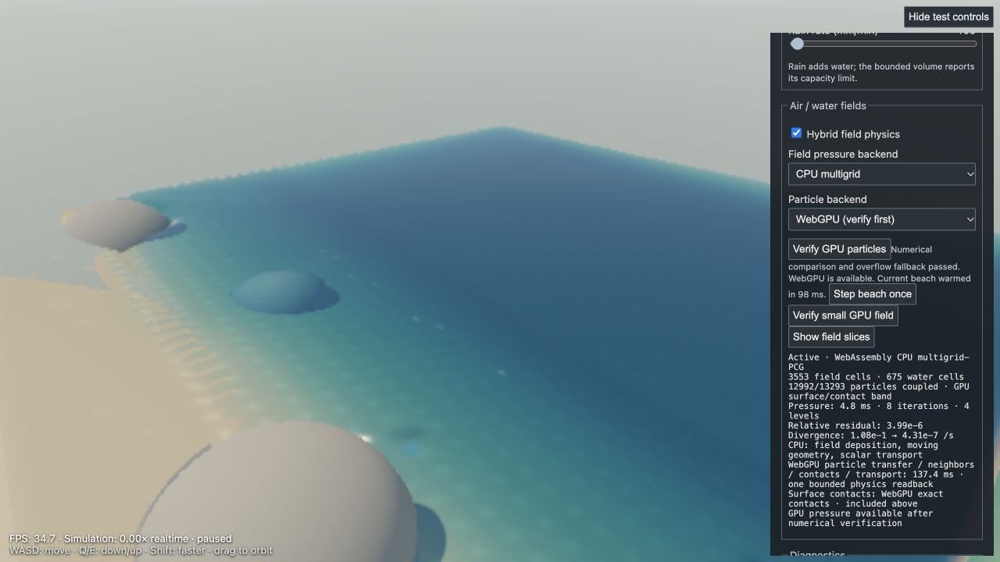
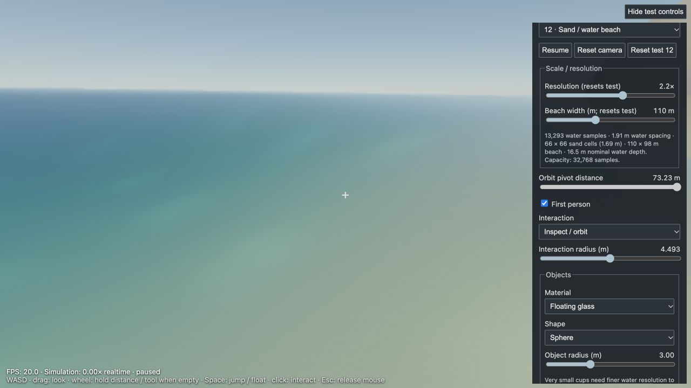

The new WebGPU particle path is numerically validated and runs in the live beach. It is optional: it improved particle-stage time on this Mac, but did not improve overall frame rate in the high-wind rendered test. CPU/WebAssembly remains the default. No context loss occurred during these checks. This is bounded validation, not a guarantee against every driver failure.
WebGPU reported AMD GCN-4; the live WebGL renderer reported AMD Radeon Pro 560X / ANGLE Metal. These are local development measurements, not RTX 5070 Ti results.
| Measurement | CPU/WebAssembly | WebGPU particles |
|---|---|---|
| 3,024-particle physics-only: median particle stage, last 12 of 16 steps | 12.95 ms | 11.00 ms |
| Same physics-only test: median whole physics step | 55.75 ms | 54.60 ms |
| 13,293-particle beach, 45 rendered frames: average FPS | 3.16 | 2.88 |
| Same rendered run: simulation / wall time | 0.206× | 0.183× |
| Same rendered run: median / p95 frame interval | 283.5 / 466.2 ms | 300.7 / 616.0 ms |
| Last sampled particle stage in that run (not an average) | 61.7 ms | 36.3 ms |
The rendered scene used resolution 2.2, beach width 110 m, wind 24 m/s, all existing optimization toggles, and the same reset camera. Both runs reached the 32,768 fine-particle cap. GPU ran first, then CPU after resetting the beach; these are short serial comparisons with warm-up and scheduling variance. Per-pass timings identify substantial foam and wind-grain drawing cost. A faster particle stage therefore does not establish an end-to-end win. The physics-only check excludes rendering and fine effects and must not be presented as full-scene FPS.
The first actual-beach GPU job took about 736 ms before warm-up; subsequent particle jobs were much shorter. The live verification now exercises the current beach while paused and discards that result, moving this first-use cost out of playback. Verification itself can still take several seconds.
Raw evidence: six numerical fixtures and overflow check, physics-only timings, rendered CPU run, rendered GPU run. Earlier iteration measurements remain alongside these files.
All six GPU comparisons passed: free water, sphere/tilted cup, a larger neighbor workload, carved sand, perimeter contacts and the player capsule. Neighbor counts and sets matched exactly. Maximum position difference was 7.4 × 10−6 scene units (0.074 mm at the fixture's 10 m scale). The deliberate overflow test selected fallback without disabling the device. Contacts retain the reference solver's bounded three-iteration behavior; this is not a general guarantee of zero penetration for arbitrarily interpenetrating initial solids.
36 numerical/input tests passed, covering pressure, resting water, shoreline coupling, transport, input failures and floating. Production build passed. The own-browser check exercised first-person capture rejection, drag-look, floating, GPU verification, and full rendered playback. Rendering and particle pressure remain independent of camera motion.
The complete available transcripts of all three videos were read, not just their descriptions.
Priority after this experiment: first reduce the measured spray/grain rendering cost with an isolated Gaussian screen-space experiment; then eliminate the remaining CPU/GPU boundary by moving deposition and pressure together. Simply enabling more independent GPU passes is not supported by these measurements.
Open the paused live beach. Under Air / water fields, choose Verify GPU particles, then select WebGPU in Particle backend. The control reports the active path and CPU fallback reason. The isolated compute test performs numerical comparisons without loading the full WebGL scene.
node --test tests/live-particle-compute.test.js tests/live-player-input.test.js tests/live-orbit-input.test.js tests/beach-fields.test.js tests/live-field-stability.test.js tests/live-field-transport.test.js tests/live-field-pressure.test.js tests/live-compatible-field.test.js npm run build
Live GPU controls after verification and paused stepping (diagnostics):

First-person floating / fallback drag-look check:
